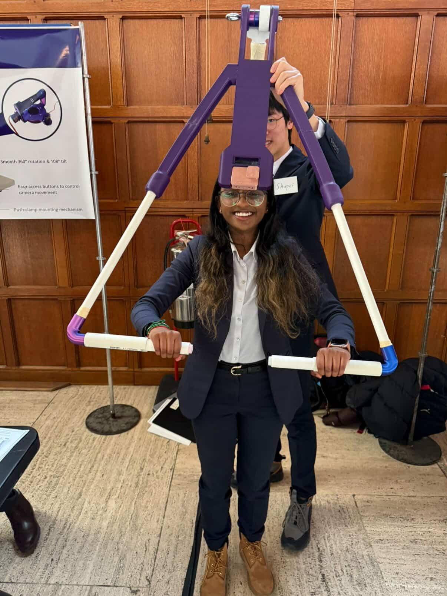
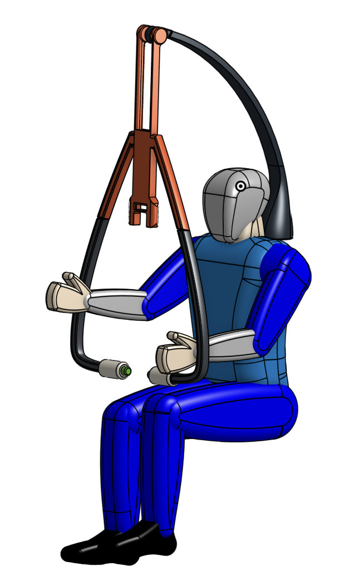

WRC FILM
Wheelchair-Mounted RC Filming Gimbal
An accessible filming concept that helps a community participant with CVI operate a camera more independently—without sacrificing stability, safety, or recording quality.
1) Summary
This project page is organized to function as a personal engineering handbook: it is meant to be navigable, evidence-forward, and useful to future-me when planning and validating designs in new contexts.
Pegasus Toronto is a day support program in the GTA for adults with developmental disabilities (“participants”). At the Matty Eckler Community Centre (MEC), participants create short films for the annual Pegasus Incredible Film Festival (PIFF). Jonathan enjoys filming with a GoPro HERO10 Black, but limited arm strength and Cortical Visual Impairment (CVI) make it difficult to hold a camera at eye level and operate low-contrast controls independently.
Community + opportunity framing
Instead of treating Pegasus as a “client” that tells us what to build, we worked with collaborative stakeholders (Jonathan, primary counsellors at MEC, and the film director Jerome). Our opportunity was framed as a verified, sustainable improvement to lived experience: increasing agency to record footage with greater control and independence, without compromising safety or recording quality.
Solution (what we are building toward)
WRC FILM is a wheelchair-mounted filming concept centered on a gimbal-based mechanism plus a monitor and simplified, high-contrast controls. The design aims to keep the viewing interface in Jonathan’s most usable field of vision, reduce physical strain, and enable controlled pan/tilt camera movement with minimal effort.
Recommendation (explicit)
After comparing three concepts (Handlebar / Gimbal / Slider) and running proxy verification with stakeholders, we recommend advancing the Gimbal direction into the next phase.
Deliverables
PDFs are stored at projects/assets/docs/.
Note: the link to To Print.pdf uses URL encoding because the filename contains a space.
Team credits
- Jingshu — prototyping, CAD modelling
- Shupei — research, testing, prototyping
- Rishana — writing, prototyping
- Sayali — writing, prototyping
Embedded PDFs (optional)
Brochure
Poster
2) Annotation
In WRC FILM, I treated engineering as a way to expand agency for people who are routinely excluded by default product assumptions. Instead of optimizing for novelty or maximum features, we prioritized a path that is learnable, low-strain, and resilient in the real community filming workflow.
How my position shaped decisions
- Agency over assumptions: Independence was a design outcome, not a bonus feature.
- Collaboration over extraction: Stakeholders shaped requirements and what we tested first.
- Verification over intentions: If evidence contradicted an assumption, we revised it.
3) Concepts
We explored three concept families to reduce accessibility barriers for independent filming. Showing all three documents the design space and the evidence-based convergence.
Handlebar
Direct manipulation through grasping/rotation. Strength: intuitive interaction. Risk: stability and safety depending on mounting position and motion range.

Gimbal Recommended
Gimbal + monitor + simplified controls. Strength: stability + DOF with low strain. Chosen to advance based on verification feedback.

Slider
Translational camera movement via slider. Risk: friction / sustained force can cause strain over time.

Chosen direction (explicit)
The concept recommended to move into the next phase is Gimbal.
Recommended direction
WRC FILM is the umbrella project; the gimbal is the core mechanism we recommend carrying forward. The design intent is to maximize independence while keeping the system safe, stable, and learnable.
What the system does
- Keeps the viewing interface in a comfortable field of vision.
- Provides pan/tilt degrees of freedom while minimizing vibration.
- Uses simplified, high-contrast, tactile controls (less reliance on low-contrast camera buttons).
- Supports quick setup so staff can deploy it reliably in real sessions.
4) CTMF evaluations (≥4)
Each CTMF below is written as: evidence of use, utility & fit (critical evaluation), and what I would change next time. (This structure is intentional: it makes the page usable as a personal handbook.)
CTMF 1 — Request for Proposal (RFP)
Evidence of use: We revised and refined the RFP to define community context, primary stakeholder constraints, and a structured Needs–Goals–Objectives framing that guided what we tested first.
Utility & fit: The RFP prevented “solution-first” thinking and aligned the team on what success means. The main risk is false certainty: early objectives can embed assumptions.
Next time: I would label which objectives are verified vs unverified and attach a short verification plan to each.
CTMF 2 — Functional decomposition
Evidence of use: We decomposed “independent filming” into designable functions (stabilize, control pan/tilt, provide usable view, start/stop recording, mount safely, deploy quickly).
Utility & fit: It helped us evaluate concepts fairly: a concept may look elegant but fail “deploy safely” or “learn quickly.”
Next time: Pair decomposition with an explicit interaction-cost layer (physical + visual + cognitive load).
CTMF 3 — Proxy tests & verification
Evidence of use: We compared Handlebar / Gimbal / Slider using proxy verification. We set measurable requirements (e.g., viewing distance rule, 2 axes of freedom, max operating force, weight, and vibration) and used stakeholder validation + our own verification to converge on the gimbal direction.
Utility & fit: Proxy testing converted debates into observable evidence and reduced the risk of building the wrong thing.
Next time: Repeat the key test across multiple sessions and pre-register success criteria for each proxy.
CTMF 4 — Reference design analysis
Evidence of use: We analyzed reference designs (existing mounts, pan/tilt systems, clamps) to identify consistent strengths and failure modes relevant to Jonathan: stable structural support reduces sustained holding and vibration, while remote control interfaces can fail if they lack tactile/visual contrast.
Utility & fit: Reference analysis prevented reinvention and helped us justify why the gimbal concept needs: (1) a stable mount/clamp strategy, and (2) a control interface designed for low-vision/tactile clarity.
Next time: I would formalize reference insights into a “requirements stress test” checklist: for each objective, list which reference design fails it and why—so tradeoffs stay explicit during prototyping.
5) Visuals
Captions should connect each visual to a claim (comfort, stability, learnability, deployment). A good caption is: Claim → Evidence → So-what.
Team photo

Three concepts

Annotated gimbal figure
One annotated figure makes grading easy: label monitor placement, DOF, control interface, and mounting points, and tie each label to a requirement.

Credits
Explicitly credit teammates and describe contributions.
Design team
- Jingshu — prototyping, CAD modelling
- Shupei — research, testing, prototyping
- Rishana — writing, prototyping
- Sayali — writing, prototyping